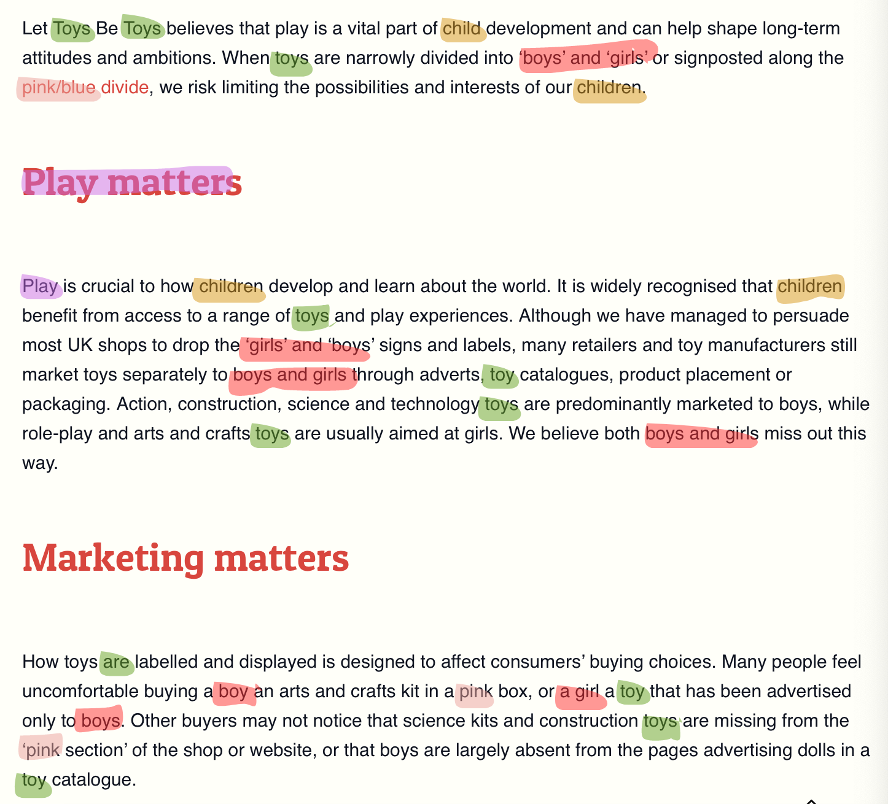
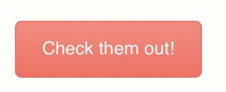
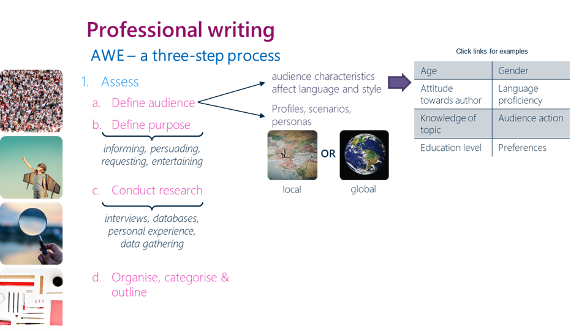
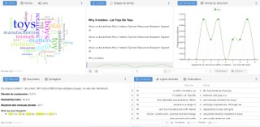
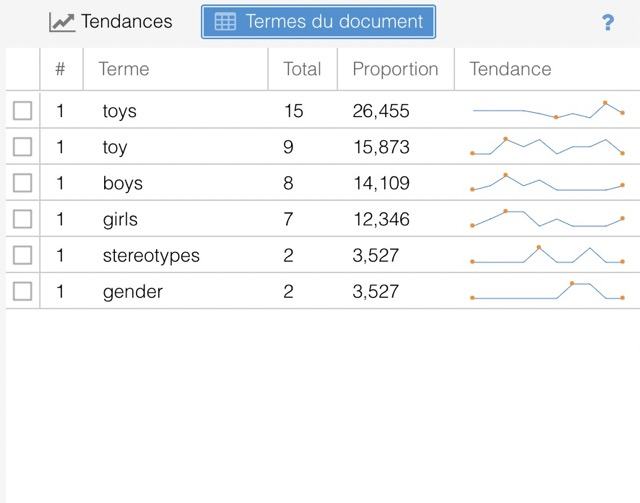
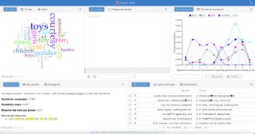
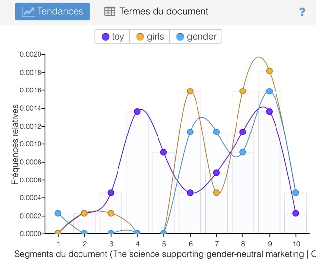
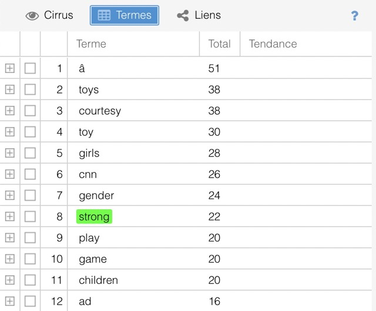

Week 5
IL task 1 & 2 - Review professional writing characteristics
For my analysis, I used the website that is closest to my subject: Let toys be toys.
| Accuracy | It is difficult to say whether or not this is inaccurate, as the site does not seem to specify its sources. Nevertheless, it doesn't seem to be going to extremes. |
|---|---|
| Active voice | The website mixe the 2 types of voices. Moreover, they use a lot the pronouns "we" and no the first one. This type of choose can create 2 informations : there are several people who manage the website or/and they trie to include the public. |
| Limit biases | The website is just in English which can create a racial prejugy. This can also prevent the subject from being opened up to people who don't speak the language. It's true that English is a language that is regularly learnt and used, particularly in the scientific world, but we shouldn't make generalizations. The primary aim of the site is to highlight the importance of putting an end to sexist stereotypes. It does, however, make a general point about the mismanagement of toy shops. It's not until the very end of the article that the author highlights inclusive toy shops. |
| Clarity | The site uses words that are not too complicated. As proof, I'm not a native speaker and I didn't really need to use a translator to understand. Some words are more complicated but we can undrestand them with the contexte. However, there are a few terms used that need defining, for example "STEM subjects". Certain other terms may be clear to a student of marketing or digital, but perhaps less so to people with less knowledge of the subject, for example: product placement, packaging, labelled and displayed. |
| Conciseness | Some of the sentences and words are a little too long, which can make reading a little cumbersome. But overall, the text and the words used are fairly simple. |
| Conversational and smoothly flowing prose | The text is not too long and seems to be designed to give the reader an idea of the subject from the outset. Some of the sentences seem convoluted, but the text is meant to sound scientific in order to give an impression of truth. Sentences also seem to begin regularly with conjunctions to give rhythm to the text. |
| Correctness | It's hard for me to spot spelling mistakes in English as I'm not a native speaker. I didn't see any shocking mistakes. |
| Parallelism | As you can see, there's a lot of repetition, so you're regularly reminded of the main subject. What's more, there's a parallel between one of the headings and the start of the paragraphs.  |
| Positive voice | The author does not use negative phrases when talking about consumers, because his aim is to win them over. However, he does use fairly negative phrases when talking about shops and businesses. He seems to be blaming them. |
| Strong nouns and verbs | The options are fairly clear and precise. There's nothing superfluous, and you know what the page is going to send you to when you click.  |
| Sentence variety | Very few sentences in the text begin with similar words. In terms of length, it varies a little but the sentences remain long. Évitez d'écrire des phrases qui commencent par le même mot ou la même expression. |
| Simple words | As explained for strong nouns and verbs, they avoid superfluous words when making navigation choices. |
| Shorter paragraphs | The paragraphs are less than the length of a thesis. Nevertheless, the site remains dominated by text, which could bore users. |
| Tone and voice | The voice used is fairly formal and intended to be educational. Nevertheless, the site clearly displays a point of view and is therefore not objective in its way of speaking. |
IL task 3- The AWE writing process
This task will help me to create my reflective essay.
| Asses | |
|---|---|
| Define audience | Young adult, student, or adult. More for people around 16 and 35 years old with knowledge.It can also be young parents who want to combat sexism in their education. These are people who speak English and have an interest in sexism, advertising or genderless education. The subject can touch more female or parents but everyone can have an interest. |
| Define purpose | The purpose is to informing and create interesting about my subject : the genderless toys advertising. |
| Conduct research | The aim would have been to create a survey with a database. Unfortunately this won't be possible, but the idea of a survey remains. |
For the second part, I usually write an outline of my ideas first. Then I write a text that I rework. For the 'Edit' part, not being a native speaker, I use the Grammarly tool to check my spelling mistakes.
Lab task 1 - Using voyant-tools to explore textual content
I have analysed an initial text entitled "Why it matters" from the "let toys be all" website. Article link.
| Voyant tool |  |
|---|---|
| Part two | The most common terms used are "toys" and "toy", which proves that the article is really about toys, but the terms "stereotypes" and "gender" only appear twice, which may suggest that my problem is not being properly addressed. Nevertheless, we can see that they address the issue of gender when we analyse the number of occurrences of the terms "boys" and "girls".  |
| Part three | The most common terms used are "toys" and "toy", which proves that the article is really about toys, but the terms "stereotypes" and "gender" only appear twice, which may suggest that my problem is not being properly addressed. Nevertheless, we can see that they address the issue of gender when we analyse the number of occurrences of the terms "boys" and "girls". |
The first text didn't seem complete enough. I decided to analyse another. Let toys be toys: The case for gender-neutral marketing by Emanuella Grinberg for CNN Article link.
| Voyant tool |  |
|---|---|
| Part two | The most common terms used are "toys" and "toy", which proves that the article is really about toys, but the terms "stereotypes" and "gender" only appear twice, which may suggest that my problem is not being properly addressed. Nevertheless, we can see that they address the issue of gender when we analyse the number of occurrences of the terms "boys" and "girls".   |
| Part three | The most common terms used are "toys" and "toy", which proves that the article is really about toys, but the terms "stereotypes" and "gender" only appear twice, which may suggest that my problem is not being properly addressed. Nevertheless, we can see that they address the issue of gender when we analyse the number of occurrences of the terms "boys" and "girls". |